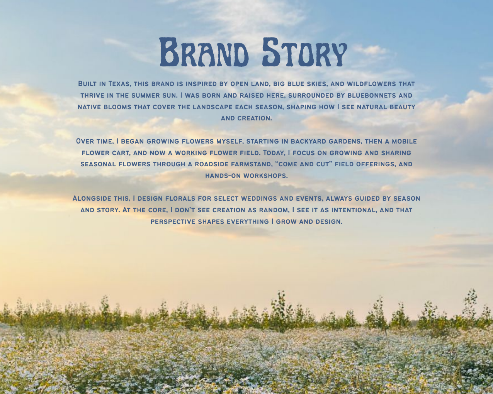
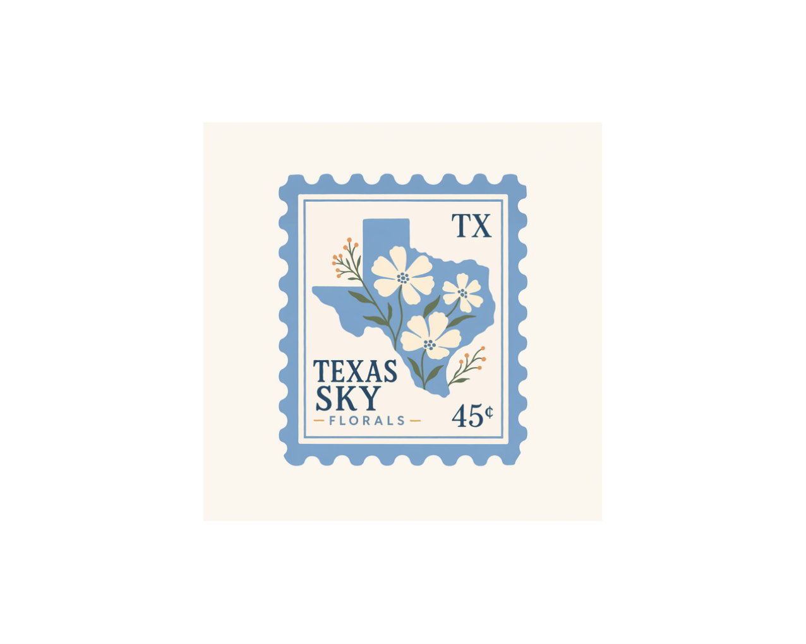
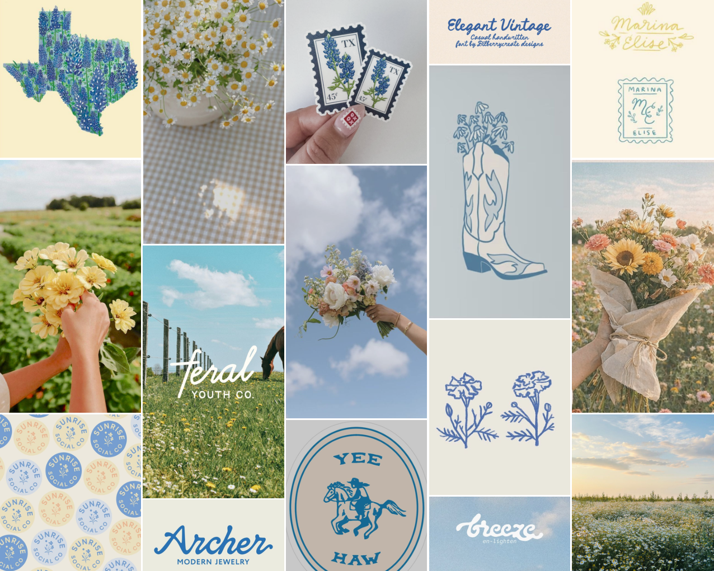
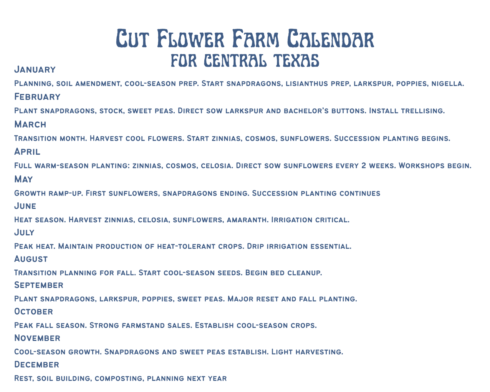
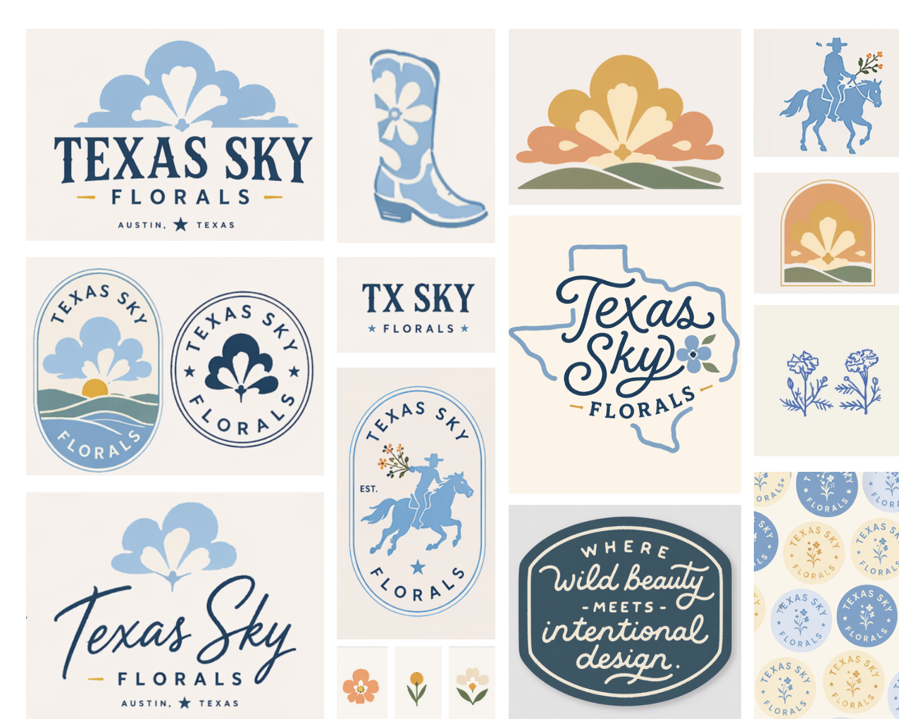
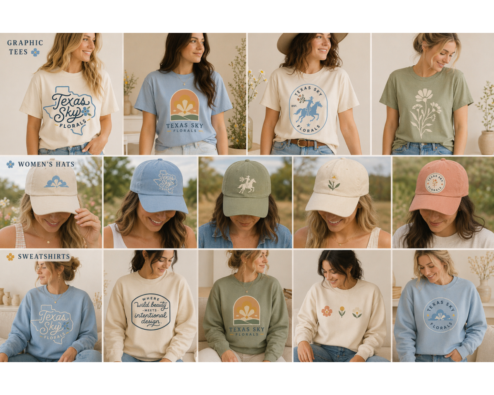

Built in Texas
Field-grown inspiration
Inspired by open land, big blue skies, bluebonnets, and the rhythm of a working flower field, Texas Sky Florals brings together seasonal growing, farm stand bouquets, hands-on workshops, and floral design for meaningful gatherings.


Sky blue. Butter yellow. Wildflowers. Boots. Golden hour. Peaceful. Welcoming. Local grown.
Built in Texas, this brand is shaped by the wildflowers that thrive under a summer sun and the wide-open landscapes that make Central Texas feel both expansive and grounding.
What began in backyard gardens grew into a mobile flower cart and then into a working field, with seasonal flowers shared through a roadside farm stand, come-and-cut offerings, and hands-on workshops.
Alongside the growing side of the brand, Texas Sky Florals designs for select weddings and events with a story-first approach that feels heartfelt, local, and naturally abundant.
The visual language leans airy and sun-washed, with generous spacing, soft cream paper tones, and denim-blue detail.
The brand colors pull from sky, butter, bloom, and meadow with room for warm peach and sage accents.
It is intentionally not polished into something sterile. The charm comes from warmth, place, and hand-touched details.
Paper-wrapped bunches and easy grab-and-go blooms that feel fresh from the field and unmistakably local.
An experience built around summer meadows, rows of flowers, and the joy of choosing your own bouquet in the open air.
Story-led floral design that draws from the season, the setting, and a softer, more natural Texas romanticism.
Warm, approachable floral experiences made for slow afternoons, community tables, and learning how to arrange what is in season.

The site language follows the PDF closely: soft editorial photography, vintage-inspired marks, stamped textures, floral illustration, and layouts that breathe like a field under a wide horizon.
The flower calendar is part of the brand story. It shows that Texas Sky Florals is not just a pretty identity, but a growing practice shaped by timing, weather, and real field work in Central Texas.
Planning, soil work, cool flower harvests, and the start of warm-season seedlings.
Zinnias, cosmos, celosia, and sunflowers take over as workshops begin and the field opens up.
Heat-tolerant production, irrigation discipline, and the shift toward cool-season reset and fall planting.
Strong farm stand season, cool-season establishment, lighter harvests, and planning for the year ahead.


The identity system has enough range to feel handmade and collectible while staying cohesive across print and digital.

This page translates the PDF into a live brand experience: airy, rooted, feminine, local, and unmistakably Texan.